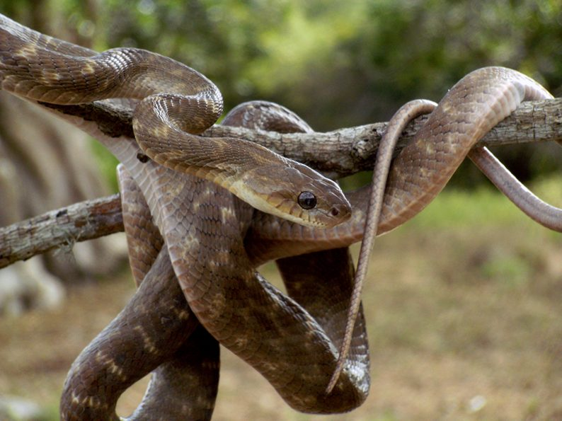

फोर्स्टन्स कैट स्नेकForsten's Cat Snake
Boiga forsteni · Colubridae · REP-0051

- Scientific name वैज्ञानिक नाम
- Boiga forsteni (Duméril, Bibron & Duméril, 1854)
- Family कुल
- Colubridae
- Hindi हिंदी
- फोर्स्टन्स कैट स्नेक
- Local names स्थानीय नाम
- forstens cat snake, forsten cat snake, bada cat snake, billi saamp
- Status here यहाँ की स्थिति
- native
- Movement आवागमन
- Resident, here all year
- Known from कहाँ दर्ज
- Others have published records from the Basti–Ayodhya districts बस्ती–अयोध्या के ज़िलों से दूसरों के प्रकाशित अभिलेख
- IUCN IUCN
- not evaluated
- Review समीक्षा
- not yet reviewed
When to look कब देखें
Present all year. साल भर मौजूद।
Tell it apart from इनसे अलग पहचानें
फोर्स्टन्स कैट स्नेक / Forsten's Cat Snake
Boiga forsteni (Duméril, Bibron & Duméril, 1854) — Colubridae
फोर्स्टन्स कैट स्नेक — यह भारत का सबसे बड़ा कैट स्नेक है जो पेड़ों पर रहने वाला एक विशाल और रात्रिचर सांप है। इसका सिर चौड़ा और त्रिकोणीय होता है और आंखें बिल्ली जैसी बड़ी और खड़ी पुतली वाली होती हैं। शरीर भूरा या बादामी होता है जिस पर गहरे रंग की आड़ी पट्टियां बनी होती हैं। खतरा महसूस होने पर यह अपने शरीर के अगले हिस्से को ऊपर उठाकर डरावने तरीके से फुफकारता है। यह पेड़ों पर सोने वाले पक्षियों और गिरगिटों का शिकार करता है।
Quick Identification त्वरित पहचान
| Feature | Description |
|---|---|
| Body size | Large, powerfully built arboreal snake; 1.8 m in total length, 2.3 m recorded by Wall (Smith 1943) |
| Head shape | Broad, distinctly triangular head, strongly demarcated from a slender, constricted neck |
| Eyes | Large, with vertically elliptical (cat-like) pupils adapted for night hunting |
| Coloration | Brown, tawny, or greyish with irregular dark brown or black angular cross-bars along the back |
| Head markings | Distinct dark temporal streak running behind the eye, and a pair of dark longitudinal stripes on the nape |
| Body form | Laterally compressed body, enabling it to bridge wide gaps between tree branches |
Field tip: Scan the canopy branches and hollows of large mango (Mangifera indica) and tamarind trees with a headlamp at night.
हिंदी: यह एक बड़ा पेड़ पर चढ़ने वाला सांप है जिसका सिर त्रिकोणीय और आंखें बिल्ली जैसी होती हैं। गर्दन पतली और शरीर चपटा होता है जिस पर काली आड़ी पट्टियां होती हैं।
Morphology आकारिकी
Biometrics as given by Smith (1943):
| Measurement | Value | Source |
|---|---|---|
| Total length | 1800 mm (male); Wall recorded 2312 mm | Smith (1943) |
| Tail length | 340 mm | Smith (1943) |
The head is large, broad, depressed, and very distinctly triangular, with an obtuse snout. The eye is large, roughly twice the diameter of the distance to the nostril. Rostral is broader than deep. Frontal is roughly as long as its distance from the end of the snout. Supralabials number 8 to 11, with the third, fourth, and fifth (or fourth, fifth, and sixth) entering the eye. Midbody scales are arranged in 25 to 29 rows, with the vertebral scale row distinctly enlarged, hexagonal, and broader than long (Smith 1943). Ventral scales number 250 to 270, and subcaudals number 90 to 115, all divided. The snake is rear-fanged (opisthoglyphous), bearing enlarged, grooved fangs at the posterior end of the maxilla.
हिंदी: इसका सिर काफी चौड़ा और त्रिकोणीय होता है। पीठ के बीच के शल्क बड़े और षट्कोणीय होते हैं। इसके जबड़े के पिछले हिस्से में हल्के जहर वाले दांतेदार दांत होते हैं।
Behaviour & Ecology व्यवहार और पारिस्थितिकी
Forsten's cat snake is strictly nocturnal and predominantly arboreal, spending daylight hours coiled tightly inside hollow limbs of mature trees, in bird nesting cavities, or within the thatched eaves and rafters of rural village outbuildings. At night, it moves through the canopy with deliberate, graceful agility. Its laterally compressed body acts like an I-beam, allowing it to extend up to half its body length across open air to reach adjacent branches. When threatened, it displays a fearsome defensive posture: it coils its forebody into tight vertical S-loops, inflates its throat to reveal contrasting interstitial skin, hisses loudly, and strikes repeatedly and accurately.
हिंदी: यह पूरी तरह रात में शिकार करने वाला सांप है जो दिन में पेड़ों की खोह या छप्परों में कुंडली मारकर सोता है। छेड़े जाने पर यह अपने शरीर को अंग्रेजी के 'S' आकार में सिकोड़कर जोर से फुफकारता है और तेजी से वार करता है।
Life Cycle / Phenology जीवन चक्र
Breeding occurs primarily during the summer and early monsoon season from May to August. Males engage in non-violent combat dances in tree branches to secure mating rights with receptive females. The species is oviparous, with females laying clutches of 5 to 10 elongated, parchment-shelled white eggs (Whitaker & Captain 2004). Oviposition takes place in deep tree hollows containing moist wood rot or in secluded cavities within old brick walls. Incubation requires roughly 60 to 75 days depending on humidity levels (Whitaker & Captain 2004). Hatchlings emerge measuring approximately 300 mm in total length (Whitaker & Captain 2004), immediately seeking small arboreal geckos as prey.
हिंदी: मई से अगस्त के बीच इसका प्रजनन होता है। मादा पेड़ों की खोह या पुरानी दीवारों की दरारों में 5 से 10 सफेद लंबे अंडे देती है। लगभग दो महीने में अंडों से बच्चे बाहर आते हैं।
Host Plants or Prey आहार
This species is an efficient nocturnal predator specialized in hunting roosting vertebrates in tree canopies. Its diet consists predominantly of roosting birds, nestlings, bird eggs, and arboreal lizards such as the Oriental Garden Lizard (Calotes versicolor) and Leschenault's Leaf-toed Gecko (Hemidactylus leschenaultii). It also captures bats resting in tree hollows, climbing rodents, and occasionally other small snakes. It seizes prey with a lightning-fast strike, holds it firmly with its enlarged rear grooved fangs, and works its mild venom into the prey to immobilize it before swallowing.
हिंदी: इसका भोजन पेड़ों पर रात में सोने वाली चिड़ियां, उनके अंडे, गिरगिट, पेड़ों की छिपकलियां, चमगादड़ और चूहे हैं। यह शिकार को पकड़कर अपने पिछले दांतों से जहर पहुंचाकर शांत करती है।
Predators / Natural Enemies शत्रु
Large nocturnal raptors such as the eagle owl (Bubo bubo) occasionally capture adult cat snakes from exposed canopy perches. During daytime when inactive, they are vulnerable to large diurnal predators such as the Crested Serpent Eagle (Spilornis cheela), Black Kite (Milvus migrans), and the Bengal Monitor (Varanus bengalensis), which investigate tree hollows. Large constricting snakes such as the Indian Python (Python molurus) also consume cat snakes when encountered.
हिंदी: रात में बड़े उल्लू और दिन में चील या गोह इसके छिपने के स्थानों में खोजकर इसका शिकार कर सकते हैं। बड़ा अजगर भी इसे पकड़ सकता है।
Agricultural / Human Relevance कृषि प्रासंगिकता
In the village orchards of Awadh, this large cat snake serves as an important arboreal predator of fruit-damaging rodents (such as roof rats and palm squirrels) that destroy ripening mangoes and guavas. Although rear-fanged and mildly venomous, its venom is specialized for subduing cold-blooded prey and small birds; a bite causes localized pain and swelling in humans but poses no medical danger to human life (Whitaker & Captain 2004). Because of its large size, triangular head, and fierce defensive display, it is frequently misidentified by villagers as a lethal viper or cobra and killed. It is protected under the Wildlife (Protection) Act 1972.
हिंदी: यह बागों में आम और अमरूद को नुकसान पहुंचाने वाले चूहों और गिलहरियों को खाकर किसानों की मदद करता है। इसका जहर इंसानों के लिए जानलेवा नहीं होता, लेकिन इसके बड़े त्रिकोणीय सिर को देखकर लोग इसे जहरीला समझकर मार देते हैं। यह कानूनन संरक्षित जीव है।
Expected Locally स्थानीय रूप से अपेक्षित
Not a field record. Written from published accounts for eastern Uttar Pradesh. No confirmed local sighting yet — if you have seen it, that is what the atlas needs.
अभी तक स्थानीय पुष्टि नहीं। यह विवरण प्रकाशित स्रोतों से है, किसी अवलोकन से नहीं।
In Basti and Ayodhya districts, optimal search environments include dense, mature mango orchards (aam ke bagh), ancient roadside tamarind and banyan trees, and old village estates with hollow timber. Nocturnal surveys along orchard paths with powerful searchlights from May to October provide the most reliable detection method. GBIF holds published records from these districts. A first confirmed record must be supported by a photograph showing the triangular head, cat-like pupil, and paired dark nape stripes submitted through the atlas platform.
Distribution वितरण
Global range: Widespread across India, southern Nepal, and Sri Lanka.
In India: Distributed through peninsular India, the Western and Eastern Ghats, central states, and the forested tracts and orchard belts of the Gangetic plain eastward to West Bengal.
In Uttar Pradesh: Documented from scattered forested tracts and mature arboricultural zones across central and eastern districts.
In Basti district / eastern UP: Expected in mature orchard complexes, sacred groves, and village forest tracts throughout the Ghaghara and Kuwana drainage basins.
हिंदी: यह पूरे भारत, नेपाल और श्रीलंका में पाई जाती है। उत्तर प्रदेश के मध्य और पूर्वी जिलों के पुराने बागों और जंगलों में इसका फैलाव दर्ज है।
Research Questions शोध प्रश्न
- What is the frequency of thatched-roof utilization as daytime retreats in rural Awadh compared to natural tree hollows? / ग्रामीण इलाकों में पेड़ों की खोह की तुलना में छप्परों में इसके छिपने की दर कितनी है?
- What proportion of the diet consists of agricultural pest rodents versus roosting native birds in commercial orchards? / बागों में इसके भोजन में नुकसानदेह चूहों और चिड़ियों का क्या अनुपात रहता है?
- How do local community perceptions of cat snakes affect their survival during seasonal orchard harvesting?
- What is the spatial home range size of an adult cat snake within a traditional multi-species fruit orchard?
- Can orchard caretakers be engaged through awareness materials to protect harmless cat snakes during night patrols? / क्या बागबानों को इस सांप की उपयोगिता समझाकर इसे मारने से रोका जा सकता है?
Similar Species मिलती-जुलती प्रजातियाँ
| Species | How to tell apart | हिंदी | |
|---|---|---|---|
| Common Cat Snake \ | Boiga trigonata | Much smaller in adult size (rarely exceeding 900 mm), carries a distinct 'Y'-shaped marking on the crown of the head, and pale chevron markings along the back (Smith 1943) | कॉमन कैट स्नेक काफी छोटा होता है (90 सेमी से कम), इसके सिर पर 'Y' आकार का निशान होता है और पीठ पर हल्के तीर जैसे निशान होते हैं |
| Common Trinket Snake \ | Coelognathus helena | Diurnal, non-venomous colubrid with round pupils, two dark parallel stripes on the neck, and distinct white-centered black ocelli along the anterior body | तस्कर सांप दिन में सक्रिय रहता है, इसकी आंख की पुतली गोल होती है और गर्दन पर दो समानांतर धारियां होती हैं |
| Russell's Viper \ | Daboia russelii | Highly venomous terrestrial viper with heavily keeled, rough scales, chain-like rows of large oval spots on the body, and a stocky terrestrial build | रसेल वाइपर एक बेहद जहरीला जमीन पर रहने वाला सांप है जिसके पूरे शरीर पर बड़े गोल छल्लेदार धब्बे होते हैं |
Field rule: Very large arboreal cat snake with a wide triangular head, paired dark nape stripes, cat-like vertical pupils, and aggressive S-coil defensive display in orchard trees.
हिंदी: पेड़ पर रहने वाला बड़ा सांप जिसका सिर चौड़ा त्रिकोणीय, पुतली बिल्ली जैसी खड़ी, और गर्दन पर दो काली धारियां होती हैं।
Taxonomy & Classification वर्गीकरण
Original description. Duméril, Bibron & Duméril (1854), Erpétologie générale ou Histoire naturelle complète des Reptiles, Tome 7, Deuxième partie, p. 1077; type locality: India.
Subspecies. Monotypic; no valid subspecies are currently recognized across its South Asian distribution.
Family and order placement. Placed in the genus Boiga Fitzinger, 1826, family Colubridae, subfamily Colubrinae, order Squamata.
Phylogenetic notes. Represents one of the largest and most robust evolutionary radiations within the genus Boiga, specialized for taking larger vertebrate prey than its smaller congeners.
IUCN status rationale. Not evaluated by the IUCN Red List; widely distributed across diverse forest, orchard, and rural wooded habitats across South Asia.
हिंदी: इसका वैज्ञानिक विवरण डुमेरिल, बिब्रोन और डुमेरिल ने 1854 में दिया था। यह कोलुब्रिडे कुल के बोइगा वंश का एक प्रमुख सदस्य है।
Photo Gallery फोटो गैलरी
No photos yet — add field photos to media/species/forstens_cat_snake/ and run node scripts/sync_photos.js.
Photos needed आवश्यक फोटो
- [ ] Habitat view showing typical local microhabitat (प्राकृतिक वास का विस्तृत परिदृश्य)
- [ ] Head close-up showing large triangular shape and vertical cat-like pupil (चौड़े त्रिकोणीय सिर और बिल्ली जैसी खड़ी पुतली का क्लोज-अप)
- [ ] Defensive display showing inflated throat and S-coil posture (गला फुलाकर 'S' आकार में चेतावनी देता सांप)
- [ ] Individual coiled in mature mango tree canopy (आम के पेड़ की शाखाओं में कुंडली मारकर बैठा सांप)
References संदर्भ
- Original description: Duméril, Bibron & Duméril, 1854 — see GBIF.
- Smith, M. A. (1943). The Fauna of British India, Ceylon and Burma, Including the Whole of the Indo-Chinese Sub-region. Reptilia and Amphibia. Vol. III.—Serpentes. Taylor and Francis, London.
- Whitaker, R. & Captain, A. (2004). Snakes of India: The Field Guide. Draco Books, Chengalpattu.
- GBIF Occurrence Data — Boiga forsteni, India (2025).
Source file: species/fauna/reptiles/forstens_cat_snake.md